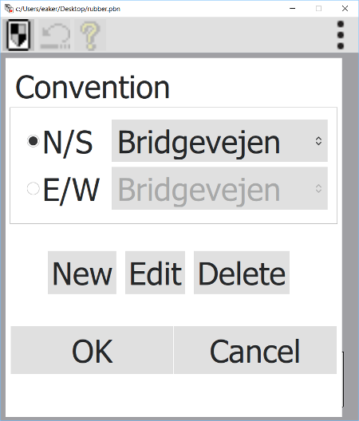

The following dialogs determines bid and play conventions.

The above dialog allows you to choose which bid systems should be used for the two bridge pairs. They do not necessarily have to be the same. In the drop down you find your own defined bid systems and also the standard bid systems supplied with ZBridge. There are choices so you can define your own bid system, edit the currently selected bid system or to delete the currently selected bid system. NOTE: This can be done also on the standard bid systems.
When you are going to define a new bid system you must give
it a name and you can base the new bid system on a reference bid system.
The following dialogs define the components of bid and play conventions.
This dialog defines general conventions. What style to use? Do you open with 4 or 5 card majors? Do you use Stayman, and how? Do you use Jacoby transfers? Do you use weak two bid open? Limit raises? Note that some of the choices are dependant on other choices (mostly in this dialog). If a choice is predetermined then the computer will not allow you to change it.
This dialog defines opening 1NT range, and whether you allow a weak 5 card major when you open 1NT,
A number of miscellaneous conventions are defined by this dialog. Are jump overcalls weak?